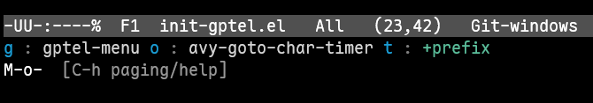
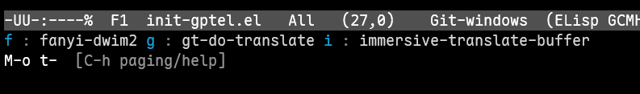

Translation In Emacs

逛 Emacs China 的时候看到了一些在 Emacs 中翻译的插件1, 2, 3，我也跟着配置了一些，最近也在使用 deepseek，它的 API 是和 OpenAI 兼容的，和翻译插件结合，翻译的效果还不错。
我想记录一下我都使用了什么插件，怎么配置的以及是如何使用的。
插件使用
插件我主要使用这几个：
- Elilif/emacs-immersive-translate
- Immersive-translate provides bilingual simultaneous display and translation of any text in Emacs.
- lorniu/go-translate
- Translator on Emacs. Supports multiple engines such as Google, Bing, deepL, ChatGPT, StarDict, Youdao and so on.
- condy0919/fanyi.el
- Not only English-Chinese translator for Emacs.
- karthink/gptel
- A simple LLM client for Emacs.
我使用最多的是 emacs-immersive-translate，它的灵感是 Immersive Translate，是我使用频率极高的一个浏览器翻译插件。
emacs-immersive-translate 给我的体验和 Immersive Translate 很接近，我主要是用来查看 Emacs 中的 Info，它还有 immersive-translate-auto-mode，可以在 buffer 变化的时候自动翻译，很方便。
最开始时我没有 OpenAI 的 API Key，我用的是 translate-shell，实际上就是 Goolge Translate。
Google Translate 的翻译速度很快，缺点是有的时候翻译不是那么准确，但也基本够用了。
emacs-immersive-translate 针对 Emacs 中的 Info，elfeed 等做了适配，总体效果看起来是不错的，每次我看 Info 都会用到。
go-translate 的灵活度会更高一些，我主要用来选中文本之后进行翻译。
fanyi 则是当作字典使用，碰到一两个单词不熟悉，就使用 fanyi 进行查询。
我很喜欢 fanyi 里面的 海词，它可以生成图表，呈现单词含义的使用频率，让我了解这个单词最常见的含义。
最后，我还会用到 gptel，它实际上不是专门用来翻译的，但是作为 LLM，我可以在任何地方调用它，帮我完成一些翻译任务。
插件配置
你可以在 init-translate.el 中查看翻译的相关配置。
emacs-immersive-translate
你可以在 MELPA 上直接安装 emacs-immersive-translate。
不过我修改了源码，调整了翻译文字颜色，所以我是作为 git submodules 安装的。
然后我配置了使用 deepseek 作为翻译服务：
(push (expand-file-name "lisp/my-lisp/emacs-immersive-translate" user-emacs-directory) load-path) (require 'immersive-translate) ;; need to add deepseek api-key with user `apikey` in `.authinfo` (setq immersive-translate-backend 'chatgpt immersive-translate-chatgpt-host "api.deepseek.com" immersive-translate-chatgpt-model "deepseek-chat" immersive-translate-pending-message "(≖ᴗ≖๑)" immersive-translate-failed-message "(つд⊂) ")
API Key 在 ~/.authinfo 4, 5中配置，由于 emacs-immersive-translate 是查找 user 为 apikey 的配置，因此 user 这里需要设置为 apikey 。
machine api.deepseek.com login apikey password ********************************
go-translate
go-translate 也是可以在 MELPA 上直接安装。
我将它配置成使用 deepseek 作为翻译服务，翻译显示在一个新的 buffer 中。
;; @see: https://github.com/lorniu/go-translate (maybe-require-package 'go-translate) (maybe-require-package 'plz) (with-eval-after-load 'go-translate (setq gt-langs '(en zh) gt-chatgpt-key (spike-leung/get-deepseek-api-key) gt-chatgpt-host "https://api.deepseek.com" gt-chatgpt-model "deepseek-chat" gt-default-translator (gt-translator :engines (list (gt-chatgpt-engine)) :render (gt-buffer-render :buffer-name "gt-translator" :window-config '((display-buffer-at-bottom)) :then (lambda (_) (pop-to-buffer "gt-translator"))))))
API Key 也是配置在 ~/.authinfo ，使用 spike-leung/get-deepseek-api-key 这个方法从文件中查找对应的密钥。
spike-leung/get-deepseek-api-key
;;; function to get api-key from authinfo (defun spike-leung/get-api-key (service) "Retrieve the API key for SERVICE from authinfo." (let* ((host (format "api.%s.com" service)) (creds (car (auth-source-search :host host :port 443)))) (if creds (let ((api-key (plist-get creds :secret))) (if (functionp api-key) (funcall api-key) api-key (error "API key not found for %s" service))) (error "No credentials found for %s" service)))) (defun spike-leung/get-deepseek-api-key () "Retrieve the DeepSeek API key from authinfo." (spike-leung/get-api-key "deepseek")) (defun spike-leung/get-gemini-api-key () "Retrieve the Gemini API key from authinfo." (spike-leung/get-api-key "gemini"))
fanyi
fanyi 从 MELPA 上直接安装使用即可。
gptel
gptel 也是从 MELPA 上直接安装，然后配置 deepseek。
API Key 也是放在 ~/.authinfo ，和 go-translate 共用。
获取 API Key 也是通过 spike-leung/get-deepseek-api-key 方法。
;; init-gptel.el --- gptel ;;; Commentary: (maybe-require-package 'gptel) (with-eval-after-load 'gptel (gptel-make-openai "DeepSeek" :host "api.deepseek.com" :endpoint "/chat/completions" :stream t :key (spike-leung/get-deepseek-api-key) :models '(deepseek-chat deepseek-coder)) (gptel-make-gemini "Gemini" :key (spike-leung/get-gemini-api-key) :stream t) (setq gptel-model 'deepseek-chat gptel-backend (gptel-make-openai "DeepSeek" :host "api.deepseek.com" :endpoint "/chat/completions" :stream t :key (spike-leung/get-deepseek-api-key) :models '(deepseek-chat deepseek-coder)))) (global-set-key (kbd "M-o g") 'gptel-menu) (provide 'init-gptel) ;;; init-gptel.el ends here
gptel 就是当 LLM 用，需要翻译的时候就复制文字和它对话。
此外，在日常开发中，gptel 还能用来重构代码，完成一些重复任务，给我一些初始代码逻辑等，也是我用的很频繁的插件。
deepseek V3 的价格足够便宜，也足够智能，目前我已经退了 ChatGPT Plus 的订阅，需要的时候使用 gptel 和 deepseek 对话。
快捷键
为了方便使用，我将这几个插件绑定到了相同的快捷键入口。
;; gptel (global-set-key (kbd "M-o g") 'gptel-menu) ;; translate stuff (defvar spike-leung/my-translate-keymap (make-sparse-keymap) "Keymap for translation commands.") (define-key spike-leung/my-translate-keymap (kbd "i") 'immersive-translate-buffer) (define-key spike-leung/my-translate-keymap (kbd "f") 'fanyi-dwim2) (define-key spike-leung/my-translate-keymap (kbd "g") 'gt-do-translate) (global-set-key (kbd "M-o t") spike-leung/my-translate-keymap)


写在最后
有了翻译插件，在阅读 info 等文档上真的帮助很大，极大地提高阅读效率。
集成了 LLM 后，翻译的质量也好了很多。
但依赖翻译插件也有个问题，就是原文会看的比较少，不利于增进英语学习。
如果你还有更好的插件，欢迎推荐啦 (ﾉ>ω<)ﾉ